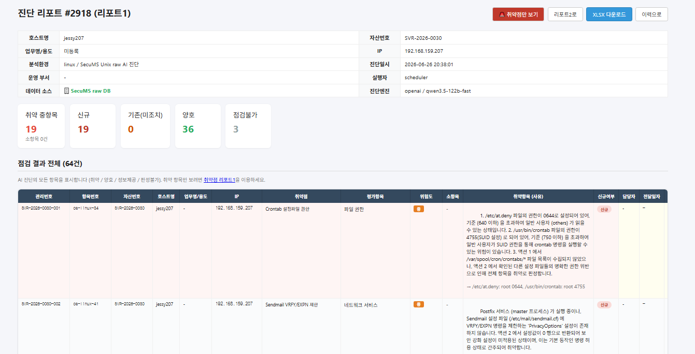
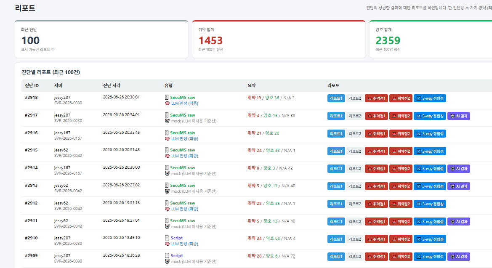
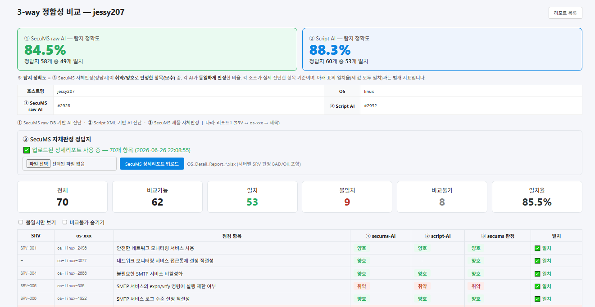
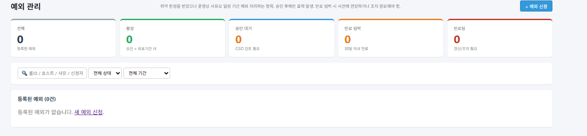
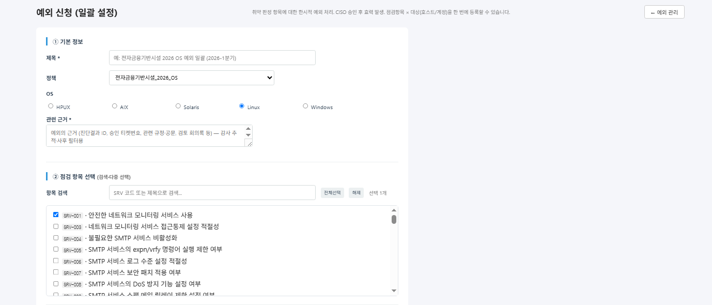
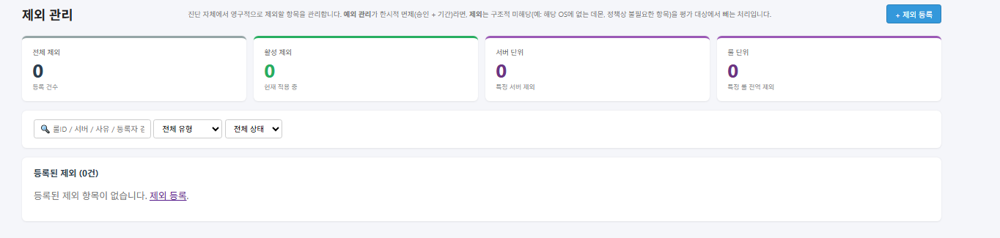
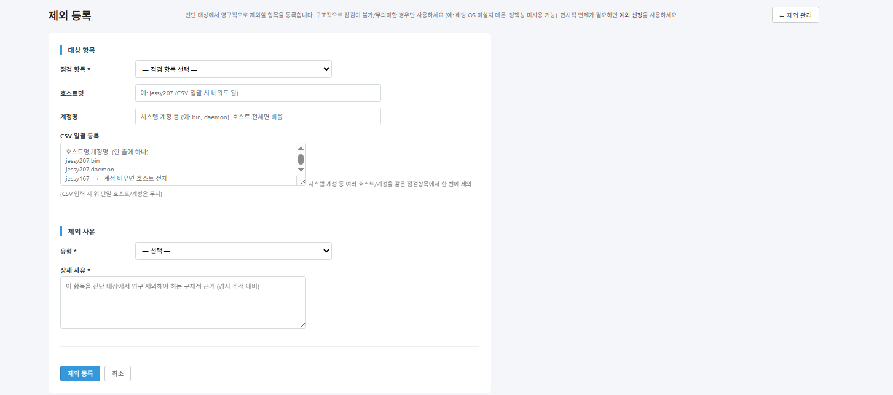

SecuMS 검증시스템 — 데모
AI 기반 보안 취약점 진단 · 정합성 자동 검증 — 점검 수행 과정과 주요 관리 기능
▶ 재생 컨트롤로 일시정지·구간 반복 가능. 아래는 화면별 상세(동영상 순서와 동일).
화면별 데모 (동영상 순서)
1로그인
관리자 계정으로 Vuln Assessor 검증 시스템에 로그인합니다.
2수집 관리
점검할 대상 서버를 확인합니다. 점검 방식은 ① SecuMS Raw Data ② Script 두 가지를 지원합니다.
3Script 전체 진단 실행
Script 방식으로 전체 서버 진단을 시작합니다. 진단 엔진은 사내 LLM을 사용해 외부 전송 없이 내부에서 점검합니다.
4점검 완료 요약
점검은 시간이 소요되므로 완료된 결과 기준으로 설명합니다. 서버별 성공/실패 · 모수 · 취약/양호/N/A · 소요시간.
5진단 관리
진단이 정상 수행됐는지 확인합니다. KPI(성공/실패/진행중/평균 소요시간) 실데이터 집계, 소요시간 분·초 표기.
6리포트 (진단 결과)
리포트1·리포트2·3-way 정합성 리포트를 제공합니다. 리포트1은 항목별 취약/양호/점검불가 상세 판정을, 3-way는 ①SecuMS-AI ②Script-AI ③정답지를 나란히 비교합니다.



7점검현황
OS별 점검 완료 현황과 호스트별 취약점 개수·준수율을 한눈에 확인합니다.
8서버별 점검 이력
각 서버의 과거 진단 내역을 시각별로 조회합니다 (진단일시·소요·취약/양호·준수율 추이).
9서버 관리 (Healthcheck)
서버 상태와 헬스체크. 메모리/CPU/디스크 사용 현황(에이전트리스 실수집)·연결 가능/불가 확인.
10CVE 동기화
NVD·CISA KEV 피드를 큐레이션 CVE DB에 보강. rpm/핫픽스 기반 결정론적 매칭, KEV(악용 중) 포함.
11예외 관리
업무상 점검 항목에 예외가 필요할 때 한시적 예외 처리. 목록(승인/만료) + 신청 폼(제목·정책·OS·관련근거·점검항목 다중선택).


12제외 관리
로직상 제외가 필요한 항목 제외(오탐·시스템 계정 등).


13알림 관리
진단 중 발생한 이벤트의 발송 이력을 관리합니다 (console/이메일/Slack).
14조치 관리
취약점 조치 날짜와 조치 항목을 관리합니다.
15취약점 관리
발견된 취약점을 위험도·조치 상태별로 통합 조회합니다.
16예약 진단
cron 표현식으로 자동 점검 일정을 등록합니다. 대상은 전체/개별 호스트 선택.
17대시보드
점검 결과의 주요 지표를 그래프와 표로 확인합니다 (취약 분포·추이·호스트별 누적).